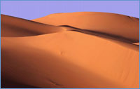
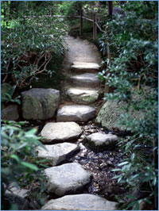
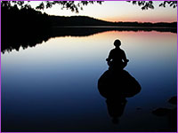

LÂCHER PRISE, C'EST APPRENDRE À VIVRE
Imaginez que votre pratique de lâcher prise est intégré au point que votre vie se déroule sur un fond de lâcher prise, sur cet accueil de ce qui est à chaque instant. Le réflexe est installé quasi en permanence.

C’est dans cette optique que je vous invite encore une fois à venir pratiquer le lâcher prise sous toutes ces formes. Accueillir ce qui est, sensations, émotions, pensées, développer le réflexe de ne plus entrer en conflit avec quoi que ce soit, même la résistance. Resté centré, ouvert et devenir de plus en plus cet accueil vivant dans lequel la personnalité se fond à chaque instant.
Tout est dans la pratique et nous savons que nous résistons même à ce qui nous fait du bien. La résistance est au cœur de notre quotidien et plus nous en prenons conscience plus nous pouvons la voir, l’accueillir et la laisser se dissoudre. La possibilité de se rencontrer et d’être ensemble pour prendre le temps de pratiquer nous permet non seulement de continuer à laisser aller ce qui fait obstacle à notre liberté intrinsèque mais renouvelle notre pratique et lui permet de s’affiner de plus en plus au quotidien.
Nous explorerons les différentes manières de lâcher prise expérimentées lors de l’atelier « LÂCHER PRISE, OUI! Mais comment? » et nous reverrons quelques exercices de l’atelier « LÂCHER PRISE ll » en les appliquant à différentes situations dans lesquelles vous vous retrouvez en conflit ou en difficulté.
Je vous guiderai dans certains exercices de groupe et superviserai des exercices de lâcher prise à deux. Pour ceux qui n’ont pas encore exploré le travail deux par deux, sachez que vous pourrez choisir de partager ou non votre intimité en rapport avec les thèmes proposés. Vous aurez cependant à répondre aux questions du votre partenaire par un oui ou un non, afin de lui laisser savoir où vous en êtes dans le processus. L’avantage du travail à deux est qu’il vous permet d’aller à votre rythme et de prendre tout le temps dont vous avez besoin pour approfondir votre sujet.
Nous ferons du lâcher prise entre autre sur les thèmes du travail, de la santé, de la mort et sur ce qui émergera spontanément. Nous continuerons à laisser aller les préférences et les aversions à l’aide de nouvelles questions afin d’être de plus en plus libre et en paix.
Vous aurez le temps de partager, de poser des questions et la possibilité d’être aidé dans votre processus. Le tout dans l’humour, la joie et le respect.
S’offrir une retraite de lâcher prise,
c’est un geste d’amour pour soi.
Le centre de l’arc-en-ciel est situé dans un endroit champêtre où vous pourrez profitez d’une piscine intérieure chauffée, d’un sauna et d’un environnement favorisant la détente, l’ouverture et le lâcher prise.

LIEU : 
L'arc-en-ciel
567 chemin Mc Cullough
Sutton, Québec
DATES: 2009
Vendredi 18 sept. 20h
Samedi 19 sept. 10h
Dimanche 20 sept. 9h30
COÛT :
• une personne, 495$
• couples, 930$
• étudiants, 440$
• reprise, 440$
Si payé avant le 29 août :
COÛT :
• une personne, 440$
• couples, 850$
• étudiants, 400$
• reprise, 400$
Le coût comprend l’atelier, l’hébergement
en occupation double et cinq repas. En occupation simple ajoutez 90$, toutes
taxes incluses.
Le coût de l’atelier doit être défrayé dans sa totalité, au plus tard le soir du premier jour de l’atelier. Le montant est payable par chèque ou en espèces. Aucun chèque post-daté ne sera accepté.
Vêtements confortables suggérés.
Places limitées : 20 personnes
Pour recevoir le formulaire d'inscription et pour toute information
supplémentaire, n'hésitez pas à communiquer
avec Lorraine Desmarais au
numéro suivant: 450-670-3214.
LÂCHER PRISE, OUI ! Mais comment ?
«Ce à quoi l'on résiste persiste.»
Ce à quoi l’on résiste, persiste.
Nous le savons et pourtant, nous réalisons que le lâcher-prise
ne s’opère pas si facilement. Lorsque nous essayons,
la plupart du temps le résultat ressemble davantage à une
démission qu’à une libération réelle.
L’atelier que je vous propose est une invitation à la
pratique du lâcher prise. Que nous soyons au travail, dans
le métro, aux prises avec la circulation, où à la
maison, nous éprouvons tous à un moment ou à un
autre des émotions dites négatives. Notre inclination
naturelle est soit de les exprimer, souvent maladroitement, soit
de les réprimer. Dans les deux cas, nous finissons avec une
accumulation de tensions inutiles dans notre corps, dans notre esprit
et/ou dans nos relations. Il existe une autre position entre l’expression
et la répression, le lâcher-prise véritable.
C’est une expérience que vous avez tous vécue,
un moment où vous avez laissé aller sans aucune retenue,
ni négative ni positive.
La méthode est simple et douce. En apprenant à poser
des questions précises concernant un conflit ou une tension,
vous expérimenterez comment laisser aller les émotions
sous-jacentes. Les questions ne sont pas à caractère
analytique. Vous n’avez qu’à répondre par
un oui ou par un non. En restant présent et à l’écoute
de vous-mêmes, vous constaterez que le changement s’opère,
peu importe la réponse. Vous pourrez expérimenter un
lâcher-prise qui va de couche en couche jusqu’à la
racine du conflit. Vous n’aurez pas besoin d’exposer
votre vie intime devant quelqu’un d’autre. Même
si vous avez de la difficulté à être en contact
avec vos émotions, cette approche peut vous être bénéfique,
car elle agit directement à la source du conflit. En lâchant
prise réellement, le calme et la paix reviennent. Notre esprit
redevient clair. Nous avons alors accès à notre créativité, à notre
intuition et à notre joie profonde. En utilisant cette méthode
vous pourrez expérimenter directement le pouvoir du lâcher
prise au quotidien et l’impact immédiat sur votre bien-être
général. Vous découvrirez que vous êtes
calme et en paix.
Si vous êtes en thérapie, cette méthode
peut accélérer votre processus de guérison.
Si vous êtes engagé sur un chemin spirituel, elle peut
vous aider à apporter votre pratique de la méditation
en action dans le quotidien. Si vous voulez simplement explorer une
nouvelle méthode de croissance, vous acquerrez un outil concret
pour vivre plus librement et harmonieusement. Cette méthode
simple et efficace peut, si vous choisissez de l’utiliser,
vous aider à recouvrer la liberté émotionnelle
et la paix profonde. La seule condition de votre part est de vouloir
tenter l’expérience avec une ouverture du cœur
et de l’esprit. Vous verrez par vous-mêmes ce que vous
pourrez en faire.
Parce que cette méthode est simple et non menaçante
et qu'elle ne requiert pas d'être en thérapie, vous
amis et conjoints pourront y participer aisément et en bénéficier.
S’ENRACINER DANS LA PRÉSENCE ET
VIVRE DANS LA JOIE DU MOMENT

Est-il possible de s’enraciner dans la Présence
et d’y rester ? Qu’est ce qui nous empêche de vivre
et d’être en contact avec cette joie, cette plénitude
au cœur de l’instant ? C’est ce que nous explorerons
ensemble.
Nous verrons comment nous pouvons laisser tomber nos masques pour
suivre le chemin de notre cœur et prendre le risque d’être
simplement nous-mêmes dans notre vérité du moment.
Nous ferons des exercices d’expansion de conscience pour mieux
identifier et accueillir les différents endroits où celle-ci
se bloque.
Pour nous enraciner dans la Présence, nous utiliserons différentes
portes d’entrées. Nous en explorerons quelques- unes
en pratiquant :
- La méditation
- La perception de vos champs énergétiques
- L’enracinement dans le corps
- L’alignement et l’intention
- L’ouverture du corps et du cœur
- Le silence
Mon intention est de vous permettre d’expérimenter
la Présence silencieuse et de vous donner des outils soutenant
l’émergence et le rayonnement de votre lumière
dans vos actions quotidiennes. Comme le disait Nelson Mandala
dans son discours d’investiture en l994 :
« Notre crainte la plus profonde n’est
pas d’être insuffisants(es). Notre crainte la plus profonde
est d’être puissants(es) au-delà de toute mesure.
C’est notre propre lumière, et non pas notre obscurité,
qui nous fait le plus peur… en laissant briller notre propre
lumière, inconsciemment nous donnons aux autres la permission
de faire de même. Étant libérés(es) de
notre propre crainte, notre présence automatiquement libère
les autres. »
En prenant l’entière responsabilité de notre
bonheur et de notre bien-être, nous nous alignons avec le meilleur
de nous-mêmes. C’est alors que les petits miracles commencent à se
manifester comme par magie.
Atelier -- information à venir.
Cet atelier s’adresse à toute personne sérieusement engagée dans son processus de transformation personnelle désireuse d’approfondir et/ou de découvrir un chemin de transformation et de guérison du cœur ainsi qu’à toute personne impliquée dans un travail de relation d’aide.
Pendant ces trois jours nous allons marcher ensemble sur le chemin du OUI. Ce oui fait parti intégrante du chemin du héros, du chemin du cœur. Nous allons ensemble découvrir le miracle du oui. Lorsque nous disons non à la réalité présente ou passé nous nous opposons à ce qui est. Nous nous contractons et nous souffrons. Chaque être humain, au plus profond de lui-même, recherche la détente, ce sentiment de plénitude auquel nous reconnaissons le sentiment d’être de retour à la maison, en soi-même. Le « Oui » à l’expérience du moment nous permet ce retour à la maison, peu importe l’expérience. Ce oui va au-delà de la recherche du simple confort, il s’inscrit dans toute démarche spirituelle authentique. C’est ce oui qui transforme et qui guérit.
Comme les non recouvrent le oui naturel de la vie en chacun de nous, le travail est de chercher les non qui se sont inscrits dans nos corps sous forme de tensions. Celles-ci sont en relation directe avec les émotions réprimées lors de nos blessures passées et sont maintenues en place par des systèmes de croyances que nous allons tenter de débusquer et d’éclairer.
À l’aide d’exercices d’enracinement et de bioénergie nous allons énergisé physiquement ces non et leur permettre de nous révéler ce qui est caché dans les profondeurs de l’inconscient. Nous ferons des expériences en groupe pour ouvrir le corps, favoriser l’ouverture du cœur et la circulation de l’énergie vitale.
Je ferai des lectures de corps pour mieux vous aider à voir où sont les blocages. Vous verrez comment bouger cette énergie figée pour la remettre en circulation et retrouver votre vitalité.
La présence, l’humour, la joie, le plaisir du partage et l’accueil de notre humanité seront au rendez vous.
Pour ceux et celles qui se joignent au groupe et qui ne connaissent pas le chemin du Héros, le chemin du cœur, vous pouvez lire le livre « Totalement humain, totalement divin » pour vous familiariser avec ce chemin de transformation et de guérison du cœur.
Ce chemin particulier nous indique clairement où nous nous situons intérieurement dans nos relations. Il nous permet de mieux comprendre pourquoi malgré nos efforts répétés et notre désir profond de vivre une existence alignée avec le meilleur de nous-mêmes, nous avons de la difficulté à créer des relations nourrissantes et soutenantes. Pourquoi malgré toute notre bonne volonté nous continuons à saboter notre existence parfois mêmes sans en être totalement conscients.
Ce précieux chemin de transformation nous permets de nous aligner avec notre vérité profonde et de devenir ce que nous sommes vraiment ; des êtres humains vivants, vibrants, aimants, créatifs, réels, généreux, responsables, etc. qui s’éveillent à leur nature profonde et qui rayonnent par leur simple présence.
Je vous invite à expérimenter le miracle du oui,
à poursuivre
Le chemin du Héros,
Le chemin du cœur.
Atelier animé par Lorraine Desmarais
Auteure du livre
Totalement humain, totalement divin
Publié aux Éditions
Quebecor
Le «OUI» qui transforme et qui guérit.

 personne impliquée dans un travail de relation d’aide.
personne impliquée dans un travail de relation d’aide.